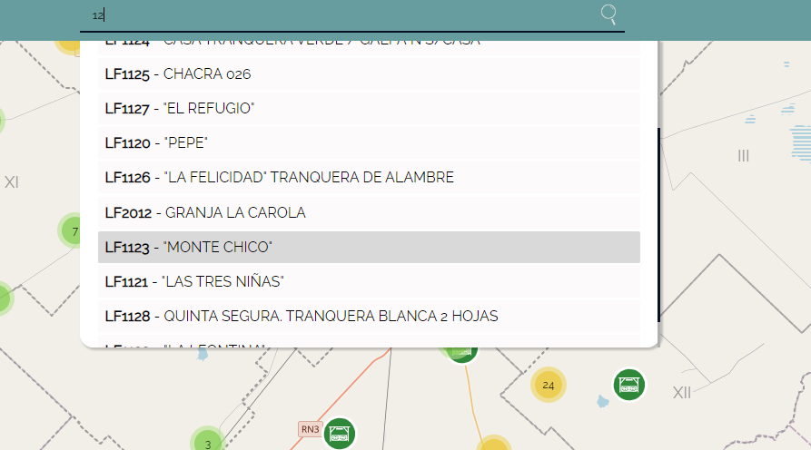
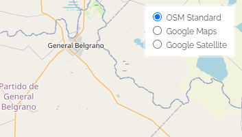
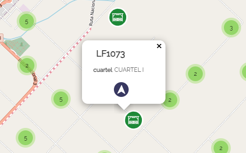

Haz "click" sobre la herramienta de búsqueda ubicada en la parte superior e ingresá
el número o nombre del dato que deseas localizar

Opcional: Selección de Mapa Base
Una vez localizado el dato podés seleccionar como mapa base: Satelite ya que te
permitirá ubicar más facilmente el lugar de destino a partir de determinadas referencias visuales

Acceso a la información
Haciendo "click" en el ícono tranqueras
se despliegan los datos del punto localizado.

Inicio de GPS
Haciendo "click" en el ícono de la herramienta de ruteo
podés acceder al recorrido a realizar para llegar al punto de destino
¿Cómo llegar?
Se mostrará el recorrido para llegar a la tranquera seleccionada junto con las indicaciones